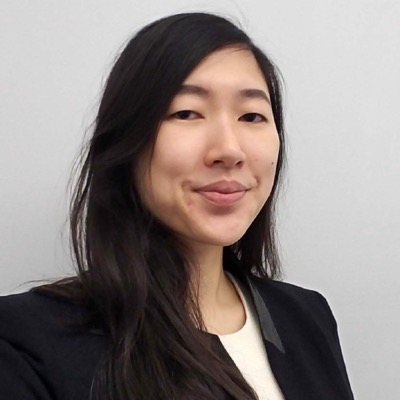
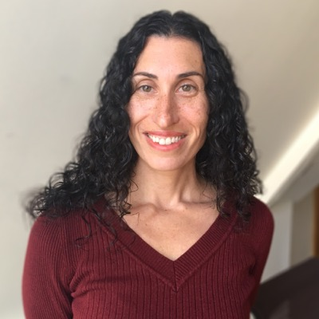
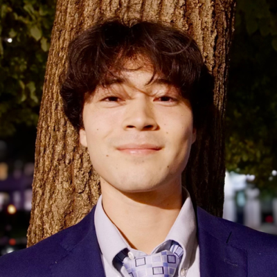
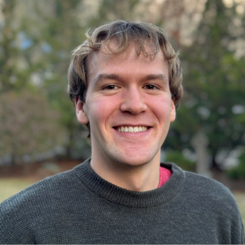

Advantage Testing
Advantage Testing
Advantage Testing
Tutoring in
Boston.
One-on-one tutoring and test preparation in Boston.
The office
BostonOffice
Newton Main Office: 10 Langley Road, Suite 201, Newton Centre, MA 02459. Concord Office: 37 Concord Crossing, Concord, MA 01742.Phone
617.630.8680Advantage Testing of Boston has delivered outstanding educational services to the New England scholastic community for more than 30 years. Launched by Mark Sander in 1991 as the first Advantage Testing location outside the New York area, Advantage Testing of Boston carries a proud tradition befitting a region renowned for its commitment to excellence in higher education.
Our tutors develop individually tailored programs that complement each student's schoolwork and help them achieve their goals. In addition to one-on-one tutoring for undergraduate and graduate school admissions exams, we offer programs for New England's independent school admissions exams, including the SSAT and ISEE. Given our proximity to many of the nation's leading higher education institutions, Advantage Testing of Boston also provides an array of academic tutoring and support to undergraduate and graduate students.
Advantage Testing of Boston maintains tutoring and administrative offices in Newton and Concord, MA. Our flagship office in Newton is in the historic, neo-Romanesque Langley Place, providing students with a warm and exceptional learning environment. We also have tutors who travel to student's homes in the Greater Boston area, across Massachusetts (including the Cape and Islands), and into New Hampshire and Rhode Island. Contact us to discuss your tutoring options.
Continuing our late pioneer Mark Sander's deep commitment to helping socioeconomically disadvantaged students pursue their academic and professional ambitions, Advantage Testing of Boston takes great pride in our partnerships with universities and public service organizations to promote access to higher education. Each year, our tutors help METCO students prepare for standardized college admissions exams. We have also tutored classes of students enrolled in Boston Arts Academy and Charlestown Lacrosse and Learning Center, among others.
(Fax: 617.630.1942)
Directors
LeadershipDaniel Kusik — Director
Patrick Connolly — Associate Director
Risa Fajkowski — Associate Director
Olivia Birdsall — Program Coordinator
Our Tutors
21 tutors








